Annual Report of the Mysore Archaeological Department for the year 1946
Reading this page
p. 23 is the page number printed in the volume; PDF 391 is that page's place in the scanned PDF, the page to open in the source scan. The badge at the bottom right shows the page you are reading as you scroll: click it to show printed or PDF numbers, or both, and to jump to a page. ↑ Top takes you back to the start.
Footnotes are gathered at the end of the report, each with its printed page and number. Plates stand where the report binds them, at the end of the paragraph they interrupt; All plates, at the foot of the contents, shows them together.
Part I: Administrative
Staff; Touis Exploration; Excavation; Conseivation; Epigraphy; Historical records and Sannads; Publications; Library; Miscellaneous; Finances
Dr M H Krishna, the Director, went on six months' furlough with effect from 5th March 1946. During the period of his absence on leave Mr I. Narasimhachar, M.A., Assistant to the Director, was appointed to act as Director of Archæology. ( vde G O No 4720/C.B 352-45-1, dated 29th June 1946).
Mr S Srinivasachar, M.A., was appointed Jumor Technical Assistant to the Director of Archæology with effect from 17th June 1946 as per G O No. E. 7016-9—Archæology 1-45-10, dated 14th May 1946
The place of Architectural Assistant continued to be vacant throughout the year. Proposals to revive the post with the designation Archæological Assistant were submitted to Government
Inspection and survey tours were undertaken by the Director of Archæology in parts of Coorg and the Districts of Mysore, Hässan, Chital-drug and Bangalore, during the first half of the year. The Acting Director toured in parts of Mysore, Hässan, Mandya, Kadür, Shimoga and Bangalore Districts during the latter half of the year. In all about fifty monuments were inspected Certain interesting monuments and sculptures were noticed in parts of Coorg and near Chōrana-Yedehalli near Shimoga
The work in connection with the preparation of a monograph on the Chandravalli excavations is progressing. Dr R E Mortimer Wheeler, Director-General of Archæology in India, paid a visit to the ancient sites at Chandravalli and Brahmagiri in the company of the Director of Archæology, Mysore, and proposed to Government that some further excavations at these sites might be conducted by the Department of Archæology in Mysore in collaboration with the Archæological Survey of India. The proposal was approved by Government and further excavations were proposed to be conducted in 1946-47. Government also sanctioned a sum of Rs 10,000 spread over two years for conducting excavations at Halcbid in the Hässan District. The excavation will be conducted jointly by the Department of Archæology and the Mysore Government Museum, Bangalore.
Tours · Exploration
Excavation.
Important conservation work in connection with the strengthening of the mahā-dvāra of the Chennakēśava temple at Bēlūr is being done.
Conservation
The recommendations of Dr Sana Ullah, retuied Archæological Chemist, to the Government of India, in regard to the preservation of the monuments at Śravanabelgola and elsewhere and of the muial paintings at the Darya Daulat, Seringapatam, are engaging the attention of the authorities. Certain experiments have been conducted at Sravanabelgola with the solutions supplied by him and by the Indian Institute of Science, Bangalore. The results are being watched. The Director-General of Archæology in India is also being consulted in connection with the preservation of the paintings at the Darya Daulat, Seringapatam.
In connection with the preservation of Shāṇi's tomb at Hodigere near Chennaguri in the Shimoga District, Government constituted a Conservation Committee in their Order No E 5593-8/Archæology 9-45-22, dated 12th March 1946, with the Director of Archæology as the Convener. The recommendations of the Committee are in the course of submission to Government.
Several estimates for repairs to the ancient monuments in the State were received and returned either with countersignature or for revision. Two estimates were received for repairs to the Amritēśvara temple at Amritāpura near Tarikere. Since both of them fell short of the actual conservation needs of the temple, they were returned for revision.
About 65 new inscriptions and records were collected. Most of them belong to the Hoysala, Vijayanagar and post-Vijayanagar times.
Epigraphy.
Several historical records and sannads have been collected for study and return. Among them there are some which are in Marāthi characters.
Historical Records and Sannads
The others are in Kannada. Most of them belong to the period of Krishnarāja Wadiyar III.
The printing of the annual report of the department for 1945 was completed. Advance copies of the report are in the course of submission to Government.
As directed by Government, a revised edition of the Guide to Seringapatam was published and sent to the press.
Bound copies of the annual report of the department for 1944 were received from the press and are being distributed.
Library.
About forty books were added to the Library of the Office.
Occasional queries from institutions, etc., were answered from time to time.
Periodical notes of inspection and reports were submitted.
Miscellaneous. The department participated in the Mysore Dasara Exhibition, the Exhibition under the Indian Science Congress at Bangalore, the Kannada Sāhitya Parishad Exhibition at Madras, and the Indian History Congress Exhibition at Aṇnāmalainagar. Select photographs of monuments and antiquities were also sent for being displayed at the Vikrama Exhibition at Bombay.
The receipts and expenditure of the department under the budget heads amounted respectively to Rs. 926-3-0 and Rs. 23,944-14-6
Finances during the year
The success of the work of the department, in spite of the obvious want of adequate staff, was due to the sincere co-operation of the members of the staff and their readiness to work even out of office hours
Part II: Conservation
Chitaldrug District
Harihai
Hariharēšvara temple
(1) It is imperative that all the private dwellings in the enclosure of the temple should be acquired and demolished, and a rampart wall put up all round. Improvements to the frontage may, at the same time, be effected
(2) The accietional structures abutting the garbhagriha from the left, the Kāla-Bhairava shrune and the modern structures behind the smaller HariharËsvara temple may all be knocked down, and separate shrunes for the gods built on one or two sides of the enclosure
(3) The electric installation inside the temple has unfortunately marred the beauty of the ceilings and beams. Cross-bars and drops may be done away with and subdued lights may be used in these places. The slabs may be freed from their chunam coating and all further white-washing should be strictly prohibited
Part II: Conservation › Chitaldrug DistrictChitaldrug
Uchchangamma temple; Kālamma temple; Fort walls on the Hills; ċkanāthēšvara temple; Hıdımbēšvara temple
UCHCHANGAMMA TEMPLE
The main temple is generally intact. Only the roof is leaky in a few places which may be looked into and made water-tight. The asvattha plants growing in two or three places may be cut down and their roots eradicated. The prākāra mantapas are all dilapidated. Several of their pillars have sunk and the beams have become either out of plumb or cracked. The pillars and beams require to be properly replaced and the roof and the flooring of the prākāra generally repaired and paved with cement mortar. The outer walls of the prākāra have oulged in two or three places owing to the weight above. These portions have to be rebuilt from the bottom and properly secured by bond stones connecting them with the intact walls.
KĀLAMMA TEMPLE
The Kālamma temple is generally intact. Only its surroundings need to be made neat and tidy
FORT WALLS ON THE HILLS
The plants and roots of trees should all be totally destroyed by application of Atlas Tree Killer
EKANĀTHEŠVARA TEMPLE
This is a cave temple under the shelter of a rock and is quite intact. The stucco sculptures of the parapet need to be mended
HIDIMBĒSVARA TEMPLE
The Mahādvāra. —The Mahādvāra has a tower of three storeys and presents a good appearance. It is of a peculiar type and has few parallels in the State. Unfortunately the slabs of the outer walls, pillars, etc, have been much weather-beaten and have succumbed to the action of salts. Wet paper pulp application is suggested to remove the salts from the stones to prevent further wearing out. Vinyl ascetate solution may be applied as a preservative. The joints require cement-mortar plastering suitably coloured. The brick parapet above the Hidimbēsvara temple is much runed and absolutely void of sculptures. It only adds to the weight above and may perhaps be pulled down. The chunam coating from the pillars and walls has to be scraped off slowly and carefully
Part II: ConservationKadur District
Dēvanūi
Lakshmīkānta temple
No heading in the body: this section starts at its printed page (5).
On receipt of a representation made by some local people to the Minister in charge of Public Works regarding repairs to the Lakshmikānta temple, the Government directed this department to inspect the building and submit proposals for its conservation. Accordingly the Acting Director inspected the monument and submitted proposals which are now before Government
Dēvanūr was the native place of Lakshmīśa, one of the most brilliant Kannada poets who flourished in the 17th century. The association of the temple and its deity with this poet-genius adds additional importance to the monument. Unfortunately, at the time of inspection, the main door of the navaranga was kept locked and seal'ed owing to a dispute between the archak and the convener. Hence the interior of the temple could not be inspected. As regards the rest of the temple, however, the following are the recommendations for conservation —
(1) The kaisāle requires immediate attention inasmuch as the pillars and beams have become dangerously out of plumb. These may be set to plumb and the outer wall may be built entirely of size stones and the roof made completely water-tight. Similar treatment is necessary in respect of the Yāgaśāla and kitchen.
(2) The flooring all round and inside the Yāgaśāla and kitchen requires to be made even and paved with stone-slabs or cement
(3) The surroundings of the temple need to be levelled up and made tidy
(4) The roof of the main structure is leaky in several places. It may be examined and repaired with brick-bats and gravel laid in mortar and paved with asphalt.
Part II: ConservationHassan District
Manjarābād
Tıppu's Fort
The fort is in good condition. The two central structures are only magazines. The underground cellar is directly on the west side.
The inner verandah was existing all round. But now only the north side remains. The south side has come down.
Bēlūi
On receipt of information that considerable conservation work was being done by the Public Works Department in connection with the strengthening of the interior portion of the stone walls of the Mahādvāra of the Bēlūr temple and inasmuch as the Department of Archaeology had not received any intimation in this regard nor had any estimate been received as required under the Standing Orders of Government, the Executive Engineer was contacted and a visit was made to the temple. The work was closely examined in the company of the Overseer in charge. The architects who built the Mahādvāra have built stone walls covering a rectangular portion on either side of the Mahādvāra, dressing up the exterior face only and securing the joints. At the other end in the interior, the stone blocks were left uneven so that the blocks did not properly rest one on another. From wall to wall on the inside were inserted bond beams of stone to hold the walls in position. Some of these beams happen to be old abandoned pillars of octagonal mouldings. The vacant space in between the walls was filled up by fine sand right up to the top of the stone structure on either side and over this the brick structure of the gōpura was raised, stage by stage, and storey by storey, the weight of the superstructure being originally evenly distributed.
In course of tune, however, the filled-in sand settled and sank, thus creating a vacuum to a depth of about one foot downwards from the brick construction. The weight of the superstructure had thus to rest on the stone walls only, while in the middle of the walls the bricks became loose. Thus the decay started. The concentration of the weight on the stone walls resulted in the flaking away of the edges of the stones at the joints in many places and caused vertical cracks in the stone construction and weakened the foundation. It is reported that immediate steps were thus necessary to strengthen the stone walls and underpin the basement.
Part II: ConservationMandya District
MALAVALLI TALUK
Clıkkabbāgılu
Janāidana temple (Nārāya'a temple)
No heading in the body: this section starts at its printed page (7).
JANĀRDANA TEMPLE (Nāīāyana Temple)
. The temple is in a neglected condition. It deserves to be put into order by effecting some initial repairs to the walls, ceilings and flooring. Worship according to the Pancharātra Āgama may be restored.
Part II: ConservationMysore District
Talkād— ' '
Kırtınārāya'na temple
This monument is still in a deplorable state of decay. If immediate steps are not taken, the monument becomes completely ruined. The following conservation measures are urgently necessary:—
1. The on-rush of the sand on the north-east, east and south be checked. The sand at the temple front right up to a distance of about 200 feet square should be cleared to lay bare the old stone mahādvāra and the area in front of it right up to the back portion of the Vaidyēśvara temple. The retaining brick wall on the north and south as far as Vaidyēśvara temple and the stone retaining wall above it all round the temple may also be freed from sand. Above the stone retaining wall a compound wall sufficiently thick and about 8 feet high might also be constructed. It is perhaps possible to minimise the expenditure on this account by encouraging the cultivators to remove sand for their fields from the temple premises instead of from other places. The Director of Agriculture may be consulted in the matter.
2. The dilapidated 100f can easily be repaired. The brick parapet has come down. The fallen original stones of the eaves may be replaced and the entire roof covered with a three-inch thick cement concrete overlaid by one-inch thick asphalt. Water lead-outs may be provided for the roof at suitable places.
3. The brick tower is very much dilapidated. It has to be repaired under careful supervision.
4. All the size stone and brick walls built between pillars in the open mukhamantapa should be entirely removed and the many elegant star-shaped pillars once again laid bare to view. A separate shrine of small dimensions may be constructed for the goddess in the open space to the north of the garbhagriha and to the east of the well.
5. After laying bare the platform of the temple completely to view, it may be strengthened by cement-grouting in between the slabs and undertaking whatever other repairs that may be necessary. The basement cornices which have become disjointed here and there may be set into position with cement pointing between the slabs done unobtrusively.
6. The flights of steps on the three sides of the mukhamantapa may be laid bare and restored
7. In the north-east and south-east corners the yāgaśāla and pākaśāla may be constructed with also a strong room against the brick retaining wall on the south.
8. All the inscriptions on the walls and pillars may be fully cleaned by scraping off carefully the chunam coating. Further white-washing-in any part of the temple may be prohibited. For the Ālvāis and the Āchāryas kept in the hall, separate cells in the temple compound may be built.
9. No vegetation should be allowed to grow in the premises of the temple.
10. The outer walls of the temple whose slabs have become out of plumb in several places need to be set right and properly held in position by cement grouting and suitably coloured mortar pointing between the slabs. The flooring of the hall may be suitably repaired by resetting the existing slabs but without dressing them.
11. It is a pity that without the knowledge of the Archæological Department the renovators in charge of the work in collaboration with the local sympathisers have broken some finely sculptured pillars and other architectural members into size stones in their anxiety to provide building material for the walls of the shrine of the goddess. What has already been done should be pulled down and the size stones may be used in the construction of a separate shrine for the goddess, as mentioned above, to the north of the temple.
An ancient monument board may be fixed in the premises and a watchman appointed on some reasonable remuneration to look after the monument
Pātālēsvara and Maralēšvara temples
Above the retaining wall around these temples a compound wall, about 5 feet in height, may be constructed to keep back the sand
Part II: ConservationShimoga District
Küdli
Rāmēšvara temple
No heading in the body: this section starts at its printed page (8).
An effective conservation of the temple would not be possible by merely building a "curtain wall" all round or by treating the roof as suggested by the Government Architect. The primary desideratum in the restoration of the temple is in connection with the following:—
1. It may be seen from the dislodged slabs in the north-west of the navaranga, the doorways on the north and south and the cornices in a few places that the brick super-structure above is rather heavy. Since this super-structure is not architecturally important, we can safely do away with it in order to reduce the weight and then we can replace the disjointed slabs and eaves into position securing them with bond-stones and clamps wherever necessary and by cement grouting and coloured mortar pointing on a large scale so that the walls would stand firm with the eaves superimposing them. The roof may be made water-tight by laying brickbat and jelly about 2 inches in thickness overlaid by a layer of asphalt as suggested by the Archaeological Chemist to the Government of India at Bēlūr and Haļebīd.
2. In respect of the göpuram, the hollows, of course, require to be filled in. But that is not enough. As has been done at Ambarnāth in Bombay Presidency, cement may be grouted into the interior of the tower on a large scale as also into the space in between the outer and inner walls of the garbhagriha and sukhanās 1 so that the whole thing forms a single mass. The stone outer face of the tower which shows traces of plastering here and there may be laid bare to view by careful scraping.
3. All traces of white-washing inside and outside the temple should be cleaned and no further white-washing should be permitted.
4. Inside the navaranga it is seen that several of the beams have moved out of position. It is desirable that after removing the brick superstructure above, the ceiling slabs and beams should all be replaced into position carefully and correctly.
Part III: Study of Ancient Monuments and Sites
Bangalore District
The Ancient Site of Tarabanahalli
The site is situated about 12 miles north-north-west of Bangalore. One Major Edward Elmherst who was camping at Tarabanahalli in 1943 discovered in the vicinity of the forest inspection bungalow a few interesting beads and painted and decorated potsherds, some of which were presented to the Government Museum, Bangalore. On close study they were found to bear striking similarity to the antiquities found at Chandravalli, near Chitaldrug. A joint inspection of the site was conducted by the Director of Archaeology and the Curator of the Government Museum accordingly. The site was found to extend over a vast stretch of cultivated land. To the south-west of the inspection bungalow, however, there are one or two acres of land which are uncultivated. The site requires further investigation on an intensive scale. It promises to reveal forgotten glories of the Śātavāhana Empire and the commercial ties between South India and the Roman World during the first two centuries of the Christian Era.
Part III: Study of Ancient Monuments and SitesMandya District
Maddür
Naasımha temple
To the north of Maddūr town and very close to it stand two temples one of which is that of Narasimha. It has two parts of which the inner consists of a garbhagriha of pure Hoysala workmanship with no human figures but plenty of tower work. This has been touched up in later Vijayanagar times.
The sukhanāsī is raised on four fine pillars, small but beautifully shaped. The central ceiling has disappeared, but the surviving workmanship in other parts of the temple indicates that it must have been a beautiful one. In the sukhanāsī are some beautiful images.
The temple has two quadrangles—the inner and the outer. On a mantapa in the outer quadrangle is a Vijayanagar image on a pillar. The Varada set is installed in the inner quadrangle.
In the centre of the garbhagriha stands an image of Ugra Narasimha, seven feet high, a beautifully carved figure showing Narasimha in the act of slaying Hiranyakaśipu. The image is beautifully carved and is one of the most powerfully executed of its kind in the State.
In the sukhanāsi are two sets of metallic images of Varada with Śrī and Bhū as Prahlādavarada and Varadarāja with Śrī and Bhū. The latter belongs to the old Varada temple to the west.
In front of the navaranga is an Ardhamantapa of about the Vijayanagar times. To its north are the images of Rāmānuja and Dēšika and to its south are Manavālamahāmuni, Śrī Viśvaksēnar, Nammāļvār, Yaśōda and Krishna and Srīnivāsa. Behind the temple are Saumyanāyaki and Narasimhanāyaki
Varadarāja temple
The Varadarāja temple is intact though only a small part consisting of the garbhagriha and the sukhanāsi remain. The image is Janārdana, about 12 feet high with padma, chakra, šankha and gada. It wears a long loin cloth reaching almost to the ankles. The temple is either an early Chōla or a pre-Chōla structure, and on the lower part of its walls, which is all that remains, the round cornice extends as at Kurudumale. The image is a beautiful one. It has no prabhāvaļi.
At the gateway leading to the hill is a Tamil inscription.
Just behind the Varadarāja temple are the ruuns of the old Varadarāja temple whose image is now preserved in the Narasimha temple
Santekasalagere
On the road from Karasvādi to Santekāsalagere at the south-east end of the tank stands a temple of Vijayanagar times having four images in the garbhagriha. They are three different types of Mother goddess and a Ganēśa. The temple is known as Chaudēśvari temple. The village has 150 houses.
In Santekāsalagere there are small temples of Ardhanārīśvara, Basavēśvara, Venkataramana and a large number of vīragals in the east of the village.
About half a mile to the south of the village is a large high land about 83 acres in area on which the battle was fought between Chikkadēvarāja, Odeyar and the Marātha army of Śivāju. The Mysore army routed the Marāthas. To the south-west are shrines of Bhīma Siddhēśvara, a largesh flat oblong stone, and Mādēśvara.
To the south-west of these hes a large field ideally suited for camping. This was the battle field. From here to the east a great high land runs to east-south-east towards Bangalore District.
Part III: Study of Ancient Monuments and Sites › Mandya District › MaddürMalavalli Taluk
Part III: Study of Ancient Monuments and Sites › Mandya DistrictChıkkabbāgılu
Junārdana temple
No heading in the body: this section starts at its printed page (11).
JANĀRDANA TEMPLE (Nārāyana Temple)
This is a small low-roofed structure of granite. The outer walls are raised on a low basement and are relieved by short right-angled pilasters with narrow niches on the south, west and north. Above the niches are low pwers which in their workmanship resemble the turrets at Belgola, Hangala, etc. The navaranga pillars have cubical bases and octagonal shafts with no capitals. The ceilings are all plain. The main image of Nārāyana in the garbhagriha has a prabhāvali, and holds lotus, chakra, śankha and gada which are the attributes of Janārdana. In its style of workmanship, the image appears to have a strong resemblance to the image at Tadimāhingi. It is thus not impossible that the temple with its image belongs to about the 11th century.
From the inscription No. 94, Malavalli Taluk, it is learnt that the roof of the temple which had collapsed, was rebuilt in about 1506 A. D.
Part III: Study of Ancient Monuments and SitesMysore District
Perıyāpatna
Fort; Şiînivāsa temple
The fort of Periyāpatna is an old one, belonging to the Vijayanagar times. It was occupied by a Pāllegār family in the seventeenth century. The story goes that Chikka-Dēvarāja's Dalvoi laid siege to it. In the face of the superior strength of the enemy, the owner slew all his family, and sword in hand fell on the Mysore army and died in battle.
A large east gate leads into the town (with a wall) to the Brahmin quarters which now consists of about 60 houses. In the outer north-east corner is a peepul tree with a number of images underneath it. Close to the north-west to the north is a gateway of stone leading to the tank, near which stands a Hanumān temple. The corner has an old high mound. The stone work of the fort has been mostly destroyed.
Formerly the fort was complete in the west and there was no connection between Brāhmaagaēri in the fort and Uppāigēri to its west.
SRĪNIVĀSA TEMPLE
Just to the west part of the fort stands the temple of Śrīnivāsa. The image is about 5 feet high. The inner part consisting of the garbhagriha and the sukhanāsī is older, belonging to about the middle of the 16th century. But the pillared navaranga appears to have been constructed with Hoysala pillars along with the front ankana of round pillars. Later still, appears to have been constructed the pātālānkana. The central image has lost its left front hand and no worship is offered now.
The old back building has plenty of niches and outaer pilasters with yakshas and yālis on its capitals, while the front building has no marks.
In front of the whole temple stands a mahādvāra with tower.
On one of the mukhamantapa pillars stands the low relief image of the old Pāllegār and another on the inner pillar of the mukhamantapa.
Moving directly east we enter the inner fort through a breach and find the palace site where a slab or two only marks the site of the king's palace.
To its north is the Vaidyēśvara temple with a large number of Śāiva sculptures on its outer walls and four fine ornate pillars of sixteen sides with a number of relievo sculptures on them. The temple has a Pārvati shrine facing directly south and the goddess is standing. It is said that the deity was removed here by the Pāllegār and faced south so as to be visible from the palace and that this act led to his end. The sukhanāsī has a small bull, while the gaibhagrīha has a linga which is under worship to-day.
Directly in front of this temple are runs of a Ganapati and a Vīrabhadra in the open field, where appears to have stood another Śiva temple which has of late fallen into runs.
To its east is the Āñjanēya temple near which he a number of stone slabs formerly belonging to the palace. One of them is a large slab on which the royal couple are said to have slept.
Close to the inner east gate is the cellar in which a stone chain is said to have swung in olden times.
Just to its east is the east gate with Ganapati and Āñjanēya
Chamarajanagar Taluk
Kûdalûi
This is a village about three miles from Chāmarājanagar towards north-east or about a mile from Ālūr. Here are the runs of a large town in the midst of the wet lands belonging to Nīlguri Muddanna of Mysore. There stands facing north a large image of Hanumān (8' × 5') which may very well be transferred to the temple at Padavārahallī at Mysore. The owner of the temple Mr Chowdayya of Padavārahallī is willing to get it carried. He may be permitted (The land in which the image stands belongs to the minor who is the son of Nīlguri Papanna, represented by Mr. S. Srirangachar, B.A., B.L., Advocate.) There is a ten-line inscription on a slab in front of the Śiva temple. This is in front of the Kēśava temple.
The Kēśava temple is a medium-sized building in the centre of the town. It may be put to form. The image is of Vijayanagar times about 4½ feet high. It deserves to be put into repair. A small grant may be made for this purpose.
Part III: Study of Ancient Monuments and Sites › Mysore District › PerıyāpatnaT -Narasıpur Taluk
Part III: Study of Ancient Monuments and Sites › Mysore DistrictTalkâd
Old Fort
No heading in the body: this section starts at its printed page (13).
At a distance of about 3 miles to the east of the new town of Talkād, we come across the old Arkēśvara temple. To the south and south-west of this temple there are the runs of an old mud fort wall enclosing an area which is roughly about 500 feet square. Evidently this cannot have been the site of an extensive town. It is very likely that the chief and some principal families lived here. Inside this area are found many stone mortars which are just like the modern ones but with the central depressions smaller in diameter and deeper. The fort wall appears to have had a facing of small rubble blocks on the outside and to have been provided with corner cannon-platforms and middle bastions. The south-west corner platform is even now pointed out as "phirangi dinne". Just outside this fortwall there was a moat all round beyond which there appears to have been a faussebraye also of mud and parallel to the contour of the main fortwall. The fortwall seems to have been pierced by a gateway on the east.
Against the west wall of the cannon-platform on the south-west of the fort wall are found buried in the debris two Jain images of granite (one image of white stone and the other of black stone). The black stone image is a standing type but buried half in the debris. The whitish granite image lies flat on the ground and represents a figure seated on the lion pedestal in dhyāna attitude. Both the images have their 'mukkodes' on their heads and are flanked by chāmara-bearing attendants. These images appear to have been brought from elsewhere and thrown here, since they have no reference to the period of the fort walls and the site does not show any evidence of a basti.
The situation of the Arkēsvara temple outside the fort suggests that the fort is much later in date, probably of the Nāyak period.
In the debris on the northern faussebraye of the fort were recently found in a few places some human skeletal remains. By the side of this spot there is a small tank which is now almost silted up.
The situation of the tank appears to be rather significant. At some later period than the period of the fort walls, there might have been a collection of houses inside the fort area where people lived cultivating the lands all round since the river was far off and the debris of the faussebraye outside the fort was available by the side of the tank. These people may have in all probability used this spot as a burial ground. It is reported that the remains were found at a depth of about 3 to 5 feet from the surface level of the debris. It is not very unlikely that the spot represents after all some old burial ground which has gone out of the memory of the local people.
Arkêsvara temple
The old temple has been renovated in recent years using the materials of older periods. Among the latter may be mentioned the central ceiling slabs of the navaranga and an inscription stone (Ganga) at the back of the temple. The paleography of this inscription requires re-examination. In front of the temple are set up in the open and supporting a small shrine some bell-shaped pillars belonging to the Ganga period. The shafts are slender. On the drums of two of the pillars are found relievo figures of dancers carved in small panels, the lines of which are in the shape of beaded hangings. The Sūrya image inside the small cell appears to be also of the late Ganga period since it resembles in its style of workmanship the image of Mādhava of Banavāsī. The Prabhāvali has a creeper scroll ornamentation. The makaras from whose fangs issue the creeper, resemble the makaras at Āsandi and are forcefully carved.
In the sukhanāsī of the Arkēśvara temple there is placed by the side of the bulī a small image, a foot in height, representing in high relief a four-handed Mahishāsuramardinī in a vigorous attitude. In her two back hands are held the discus and conch while with her left hand she holds the head of the Mahisha demon and with the trident in the right hand she pierces the head. The demon has a human body and the head of a buffalo as in the cave temples at Bādāmi. Though the group has worn out, the carving is forceful. The head dress also resembles in style of workmanship examples of the 9th and 10th centuries, as for instance in the sculptures in front of the Taluk Office at Dēvanahallī. The figure may be attributed to the late Ganga period.
Part III: Study of Ancient Monuments and SitesChitaldrug District
Chitaldrug
Sıva temple
There is a Śiva temple at the southern end of the hill and just behind the Oddu. This is a small neat structure with well-carved pillars and central ceiling, all of the Nāyak period and sufficiently intact. The small pond in front of the temple was originally used for the utsava of the God. The water in the pond requires to be cleaned by the clearance of the silt, etc.
To the south-west of the Rāmadēvara Oddu there is a cave by the side of which is a boulder whose front face is carved with a Kannada inscription of early Vijaya nagar period.
By the side of the mud-walls is the magazine of the Pāllegār times. There is a stone-built mechanism consisting of stone wheels on four sides which were simultaneously used in grinding gun-powder.
A few yards further north is a cave under a rock shelter in which is enshrined a mutilated image of Māhēśvari (probably of the Hoysala period) holding sword (?), trident, damaru and kapāla. The figure is seated and wears 1unđamāla and canine teeth. It is forcefully carved and deserves to be preserved in a local museum.
Outside the cave is a relievo figure of a warrior (of potstone). His head dress indicates a period earlier than the Vijayanagar times.
Bannada châvadı
This is situated to the left of the fifth entrance to the fort. The mantapa is dilapidated particularly on the southside, the basement cornices having sunk. Some initial repairs may be caused to be done to this structure. The stone elephants and horses inside the mantapa are said to represent in sculpture the pet animals of the Pāllegārs.
A few yards to the front of this mantapa are found lying on the ground masses of highly burnt mud-blocks with small round holes in them. These are said to be the moulds used for making cannon balls. Samples of these moulds may be preserved in the local museum.
Part III: Study of Ancient Monuments and SitesShimoga District
Chõianayedehallı
(Near Gājanū, Shimoga Taluk, Kasaba Hobli)
İsvara temple
At a distance of about nine miles to the south of Shimoga and about three miles to the east of the main Shimoga-Tīrthahalli road, across the Tungā river and in the midst of wild bamboo forest is situated a temple of potstone dedicated to īsvara.
The temple is now standing in a ruined condition with the front portion completely gone excepting only the bell-shaped pillars and pond-shaped pilasters which are all typically of the late Chālukyan times. Only the garbhagriha, which is raised on a simple basement platform consisting of three cornices, stands a little intact. The outer walls have a middle cornice band with hanging dental mouldings. The pilasters on these walls are plain and right-angled. On the slabs of the outer wall are carved (probably during the Pāllegār period) low relievo figures of a rishi, a seated lion, a bull, Purushāmriga worshipping linga, obscene human figures cohabiting like quadrupeds, a tortoise, nāgabandha, Nandi before a linga, Hanumān and linga and a yōgi. The doorway of the garbhagriha is typically Chālukyan though there is no ornamentation except for the lintel piece which has in its central panel the relievo figure of a squatting Ganēśa. On either side of the garbhagriha doorway are found independent images of Shanmukha, Sarasvati and Ganēśa each of them showing exuberant carving and minute details of ornamentation. It is a pity that the image of Sarasvati which happens to be the best in the group has become mutilated while the image of Ganēśa is worn out. The image of Shanmukha, however, is well preserved. By the right side of Shanmukha there is a well carved nāga stone. In the middle of the navaranga there is a fine potstone image of Nandi which shows very good carving.
Since the monument is situated in the area which will be submerged in water in about four years' time, it is suggested that the entire structure may be removed and rebuilt near the anecut proposed to be built across the Tungā. While rebuilding, the Archæological Department may be consulted since it has taken the ground plan of the temple in detail. The mutilated images, however, cannot be worshipped. They may, therefore, be removed at the earliest opportunity to Gājanūr and preserved there for the time being. Eventually they may be removed to the museum for display To the north of the temple there is a country-tiled structure of the dimension of one ankana enshrining a rude image of Chāmunđā on a lion pedestal. The goddess is represented with whiskers.
It is said that the site and its neighbourhood was originally surrounded by a fort wall outside which there was a moat running all round. Traces of this moat can be seen all round.
Part III: Study of Ancient Monuments and SitesHassan District
Bêlûr
The Chennakêsava temple
Eaves' with Kirtımukhas; Pierced stone windows
In the Annual Report of the Department for the year 1931, a detailed description of the larger bracket images, the central dome and the image of Chennakēśava was published. The eaves, screens, doorways and navaranga pillars have now been taken up for a detailed study, while notes on the other parts of the temple will be published in a subsequent report.
EAVES WITH KIRTIMUKHAS
About three feet from the ground we have a row of eaves marking the top of the basement and ornamented with beaded pendants below and small kirtimukhas above. The row runs round north and south from the front door to the end of the railing. There is nothing remarkable about this row except that the use of the kirtimukha arch as an ornamental design appears to be an inheritance from the Chālukyan and even the Pallava times. (Plate I, 1 and 2)
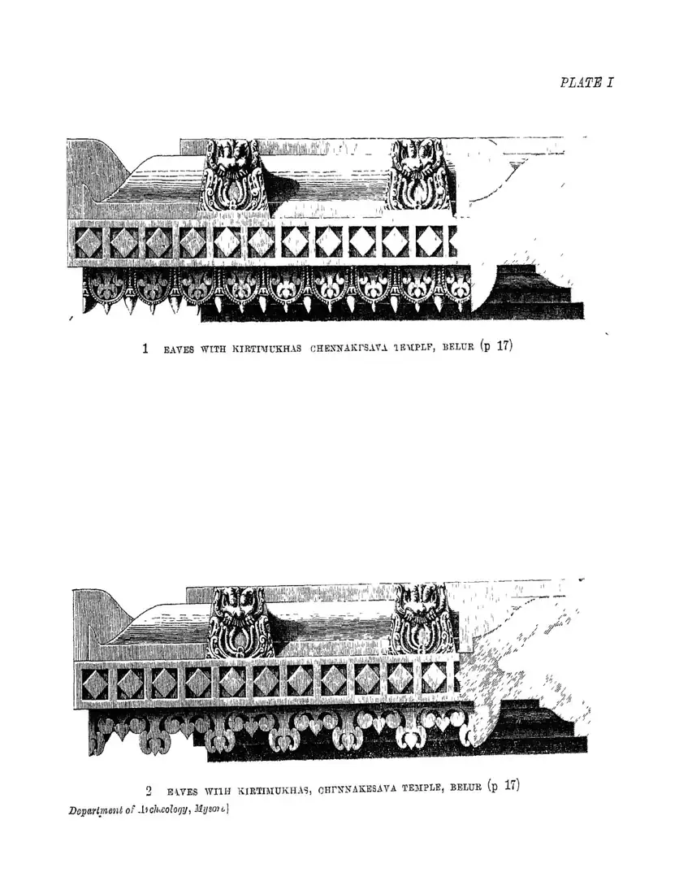
- 1 EAVES WITH KIRTIMUKHAS CHENNAKFSAVA TEMPLE, BELUR (p 17) 2 EAVES WITH KIRTIMUKHAS, CHINNAKESAVA TEMPLE, BELUR (p 17) Department of Archaeology, Mysore
Cited in the text: p. 17 ↩
PIERCED STONE WINDOWS
Between the level of the railings and the beam above to the south and north of the east doorway and up to the south-door and north-door respectively is a row of twenty sculptured stone screens (ten on the south and ten on the north) ten of which bear mostly ornamental designs, the other ten having panels with historical and mythological sculptures. Each screen is about 6 feet high and 5 feet broad and is pierced with a large number of holes to let in air and light. It has been already stated that these screens were added by Ballāla II about three generations after his grand father built the original temple.
Among the screens which bear ornamental designs there is a set of four screens which are to be classed amongst the finest examples extant. They are purely ornamental, the details of ornamentation being different in each case. The first two
3 illustrated screens (Plate II, 1 and 2) have been divided into numerous square profusely ornamented with multi-petalled lotuses carved in relief at all the corner points of the squares. The bands are ornamented uniformly with rhomboidal designs carved into them. The interiors of the squares are perforated with square holes. The two other screens illustrated (Plate III, 1) have slightly different types of ornamentation, although they are basically square in design. One of them bears elegant creeper scrolls on the vertical and horizontal bands. Every alternate square has in it embedded, multi-petalled lotuses carved in bold relief. In the other (Plate III, 2) we have instead, the lines of sub-division running diagonally forming small squares ornamented alternately with designs of flowers with four primary petals and with pond-shaped perced holes. On the top of each one of these screens is the seated image of Vishnu supported by his consort and having usual attributes in the four hands.
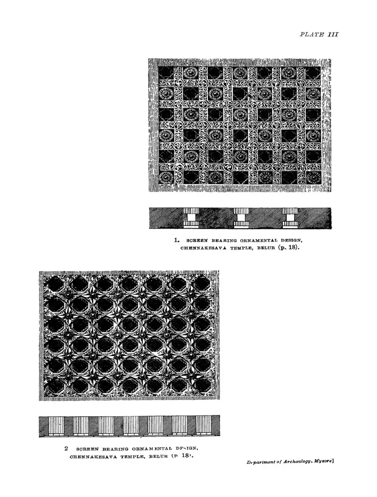
- SCREEN BEARING ORNAMENTAL DESIGN CHENNAKESAVA TEMPLE, BELUR (p. 18)
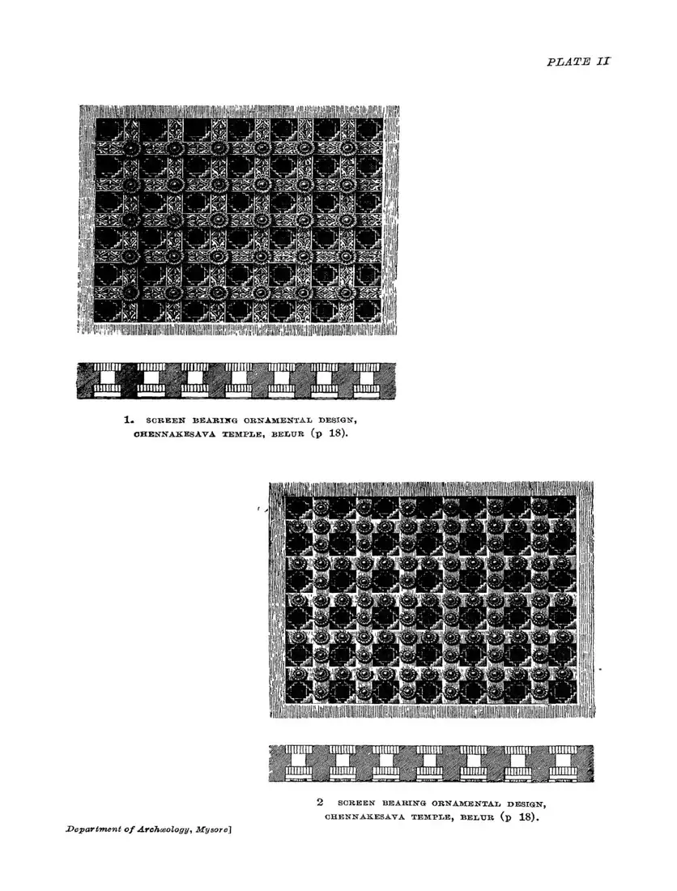
- SCREEN BEARING ORNAMENTAL DESIGN CHENNAKESAVA TEMPLE, BELUR (p 18) 2 SCREEN BEARING ORNAMENTAL DESIGN CHENNAKESAVA TEMPLE, BELUR (p 18) Department of Archaeology, Mysore
Cited in the text: p. 17 ↩
The sculptures on the other screens are more vigerous though less proportionate. There is an attempt to crowd the ground and the importance of margins and spacings is forgotten. The following are the descriptions of the sculptures on the screens.
Vishnuvaidhana in Dubar—Screen
(Plate IV)
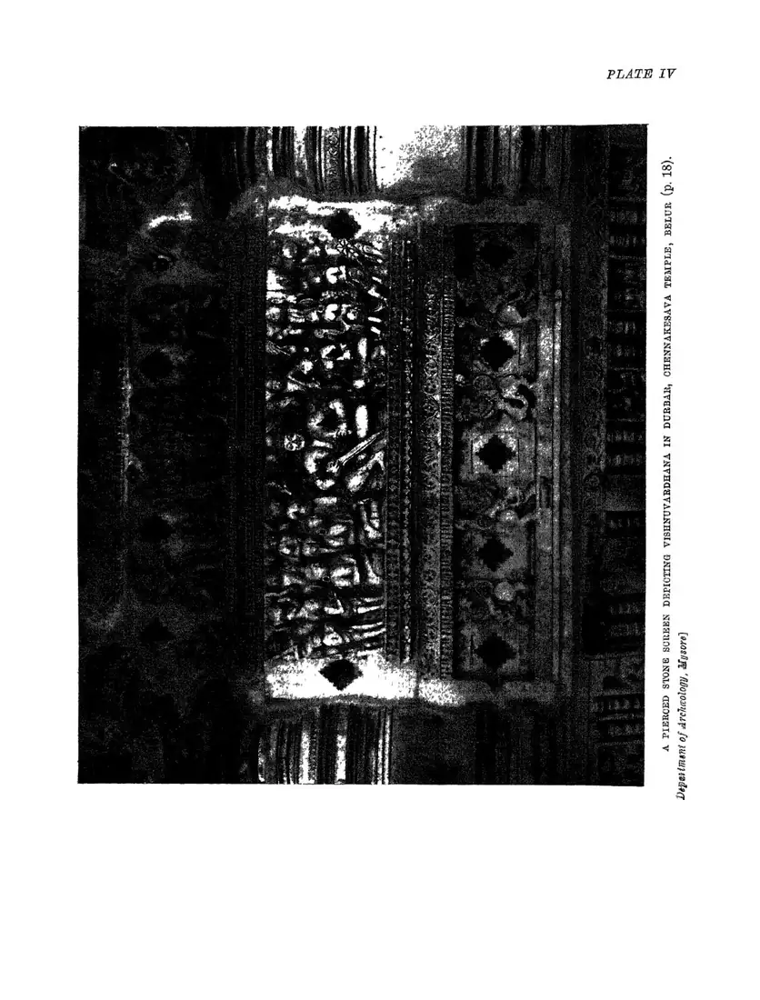
- A PLERCED STONE SOULEEN DEPICTING VISHNUVARDHANA IN DURBAI, CHENNAKESAVA TEMPLE, BELUR (p. 18)
Cited in the text: p. 18 ↩
This is said to represent the durbar of Vishnuvardhana and has four horizontal panels. Below are rearing lions supporting a floor ornamented with beaded scroll and floral designs. In the centre of the middle panel is the king seated on a cushioned seat in durbar. His hair is tied up in a knot above his head and he wears a jewelled diadem, very large ear-rings hanging down in the lobes and resting on his shoulders, trimmed beard and twirled moustaches, garlands and yagñōpavīta, rings ornamented, shorts tied with girdle, armlets and bracelets, and a waist band and holds in his right hand sword and in his left betel leaves. His forehead has no caste mark and the figure is full of life and majesty. It is of some value as a portrait since it was prepared in the time of the grand-son of Vishnuvardhana. To his left on a similar seat is his consort probably Śāntalā Dēvī in sukhāsana. Her hair is tied up in a peculiar large butterfly knot and she wears large ear-rings, necklaces and garlands and one of the latter is worn under the right arm like the yagñōpavīta, armlets, a large number of bracelets (about eight on each hand), finger rings and anklets, ornamented shorts and heavily tasselled waist belts, an upper cloth or uttarīya which has fallen down to her knees leaving the upper body bare, without even boudice. She is intently listening, holding betel leaves in her left hand while her right is about to put a folded betel leaf into her mouth. This appears to be Sāntalā Dēvi, the chief queen of Vishnuvardhana. To the right of the king, at a lower level on a carpet is seated a bearded figure with the hair tied behind his head which is covered by a cap and tied down to the chin by a band, his moustaches twirled up, large ear-rings, armlets, bracelets, yagñōpavīta, shorts, and an open-collared coat with sleeves tucked up and secured by a waist cloth. Evidently he is the minister and his right hand which is in the chinmudra, shows that he is explaining something to which the king and the queen are listening. Behind him sits a similar figure with joined hands, perhaps giving support to what the premier is stating. Behind him stand two attendants with fruit and several soldiers with swords and shields of curious designs. The latter have spear heads on staves at the lower end and are protected by ribbed lines perhaps metallic shaped like the Union Jack. Behind the queen are two ladies holding strings of flowers. Near them is another holding a mirror (for the use of the queen). Behind the king are three men holding chamaras and one man in the back line has a flying cloth (?) on his shoulder and has his hand lifted up perhaps proclaiming the king's titles. The whole scene is typical of an Indian Court and gives plenty of information about the durbars of the Hoysala days. The queen's association with the king in open durbar is noteworthy
In the upper panel is a standing image of Kēṣava in the middle under two umbrellas with a male attendant holding chānara and phala. Beyond them sit two ladies, Śrī and Bhū, with pushpa and phala in their hands. Beyond them again stand winged Garuda with joined hands to the left and Vishnuvardhana (?) under an umbrella bringing offerings to the deity. This image is neither Garuda nor Hanumān and may be a Hoysala king. At each end of the panel is a seated devotee with joined hands.
The Balı and Vāmana screen
Kâlıngamaidana screen; Ashtadıkpălaka screen; the Prahlâda episode screen; The Lakshmînārāyana screen; Bhâgavata screen; Screen XV
(Plate V)
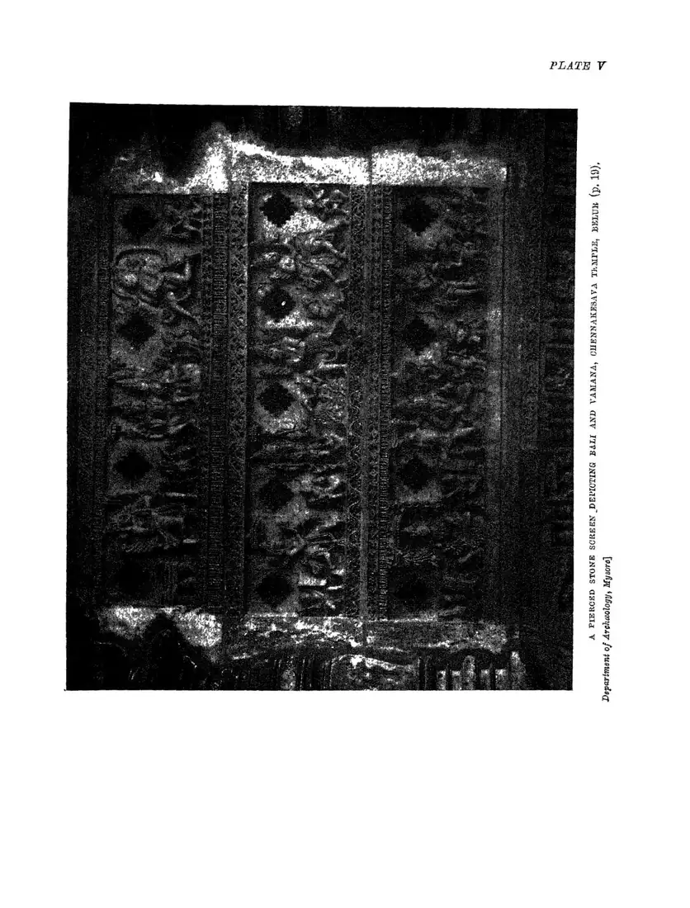
- A PIERCED STONE SCREEN "DELITING FALI AND VAMANA, CHENNAKESAVA TEMPLE, BELUK (p. 19)
Cited in the text: p. 19 ↩
This illustrates the story of Vāmana. In the centre of the bottom panel is seated in state under an umbrella the great Asura emperor, Bali, with attendants and gods. To his left under an umberlla is seated in state his queen. To his right are two supplicants one of whom is Vishnu incarnated as the dwarf Brahmin. The latter holds his characteristic umbrella with his left hand and is asking for a gift with his right. To the left is a group showing Bali, making the gift of the three worlds to Vāmana by pouriug a stream or dhāīā of water. In the middle panel is Vishnu as Trivikrama (chakra, gada, padma, śankha) under an umbrella with one leg on the ground and the other placed on the top of Mount Mēru on which are seen matsya and kūrma and on top of which is a two-faced deity, touching Vishnu's raised foot on the one side and offering a kalaśa to Garuda who stands with folded hands on the left. To the right of the god between an attendant and a body-guard stands Bali, with hands reverently joined (his fangs declare his identity). On extreme right of the panel, Śukra, the preceptor of Bali who protested against the gift, is walking out in protest, while Garuda tries to appease him and bring him back.
KĀLINGA MARDANA SCREEN
(Plate VI)
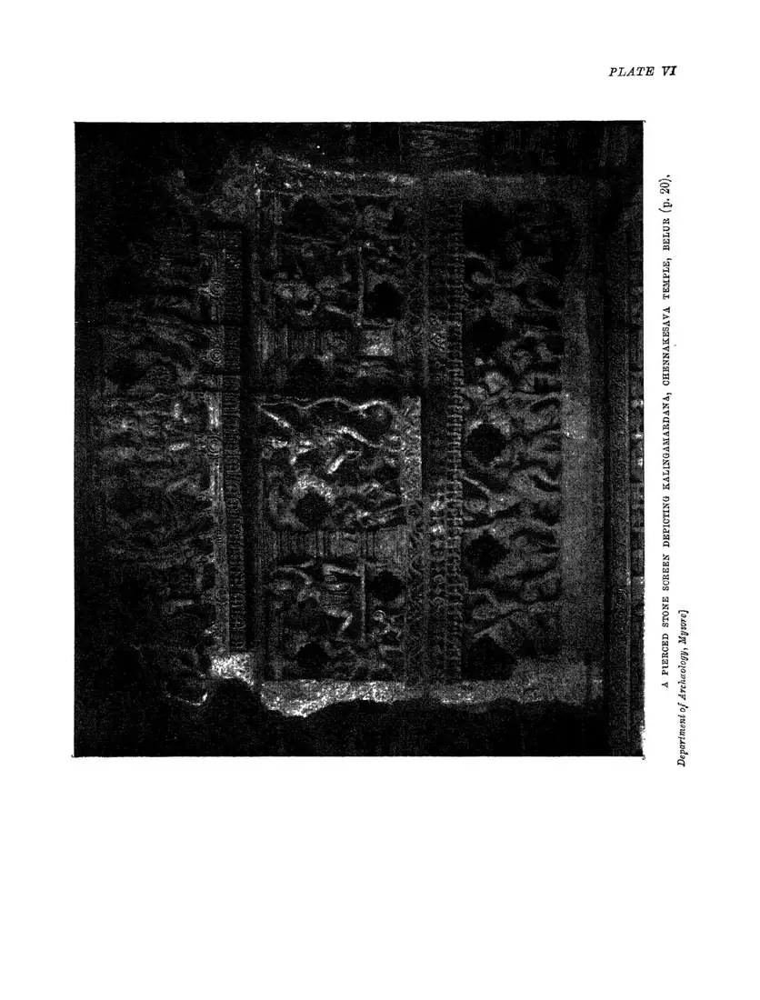
- A PIERCED STONE SCREEN DEPICTING KALINGAMARDAN, CHENNAKESAVA TEMPLE, BELUR (p. 20)
Cited in the text: p. 20 ↩
In the centre of the middle panel is two-handed Krishna dancing on the head of the seven hooded cobra, Kālinga. To his right and left are Garudas, attendants and drummers.
In the lower panel are four cows listening with lifted tails, heads and ears and four cowherds with sticks, axes and trumpets dancing with glee and celebrating the destruction of the dreaded Kālinga.
On the top is Lakshminārāyana seated in sukhāsana (padma, śankha, gada and chakra) with an attendant on each side and a Garuda to the extreme left and on the extreme right a heroic figure, bringing offerings.
THE ASHTADIKPĀLAKA SCREEN
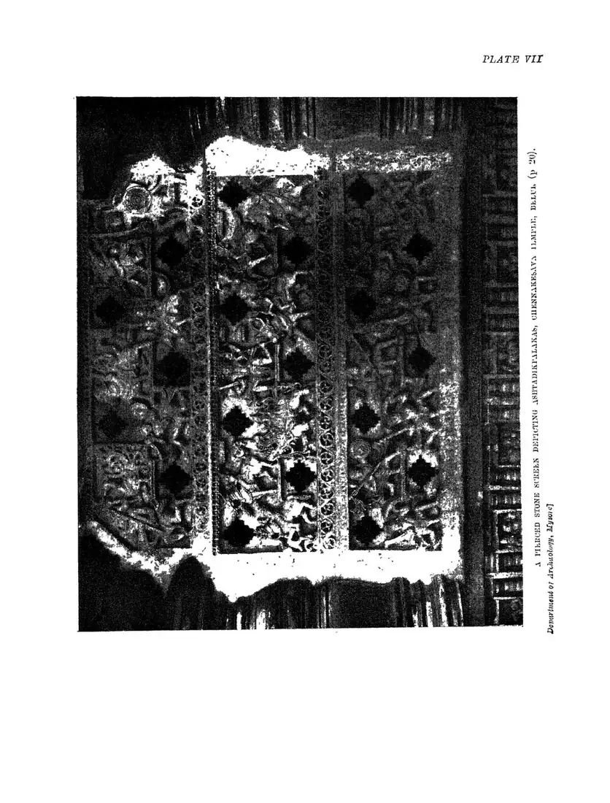
- A PIECED STONE STEEN DEPICTING ASHTADIKALAKAS, GILENAKESAYA ILMIDE, BELUL (p 20) Documentation of archaeology, Mysore
Cited in the text: p. 20 ↩
In the bottom panel is an army of seven soldiers charging, holding spears, swords bucklers and shields. The identification is not clear.
In the middle panel are seven of the eight Dikpālakas. Indra on the elephant, Agni on the iam, Yama on the buffalo, Niruriti on the demon, Varuna on the, makara, (Vāyu on the deer is absent), Kubēra on the horse and Āśvara on the bull. They are marching forth to battle. In the third panel are Kumāra on his peacock, Śiva and Pārvati on their bull, Ganēsha on his rat, and four of Śiva's ganas with spears, swords and shields on the march. It is not clear for which battle they are proceeding.
Top penel —Vishnu seated. He holds śankha, gada, chakra and padma. Garuda stands to the left and the unidentified heroic figure to the right.
THE PRAHLĀDA EPISODE SCREEN
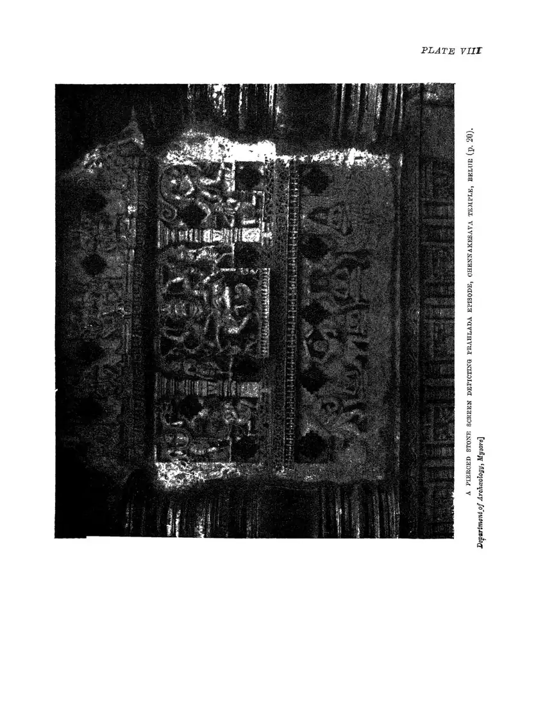
- A PIERCED STONE SCREEN DEPICTING TRAHLADA EPTSODE, CHENNAKESAYA TEMPLE, BELUR (p. 20)
Cited in the text: p. 20 ↩
At the bottom —Prahlāda is shown undergoing various persecutions. An elephant attacks him. The executioner threatens him. Cobras are let loose at him. He is put on a burning pyre. None of these harm him and he sits with padmāsana praying.
In the middle panel is Ugranarasimha with ten hands, slaying Prahlāda's demon father, Hiranyakaśipu. Prahlāda to the left and a similar figure with a kirita to the right stand with joined hands. On each side of the god is a consort with fly whisk (chāmara), while to the extreme left are Garuda and a gandharva (perhaps Indra).
In the top panel is Lakshminārayana seated in sukhāsana [padma, chakra, gada and śankha (?)] with a Garuda on each side.
THE LAKSHMÎNĀRĀYANA SCREEN
(Plate IX)
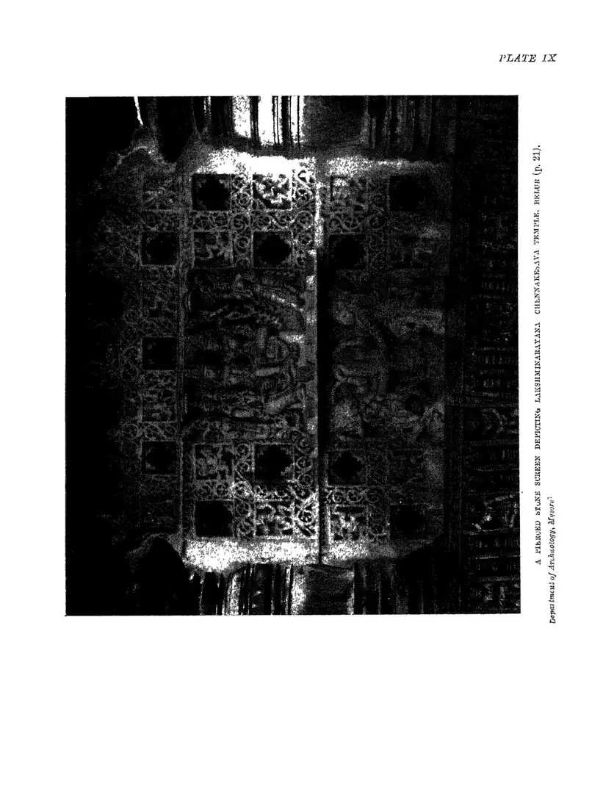
- A FIBROED STONE SCREEN DEPICTING LAKSHIMINARAYANA CHLENNAKESDAYA TEMPLE, BEEUR (p. 21)
Cited in the text: p. 21 ↩
This is mostly ornamented with a creeper scroil with dancing figures of Gandhar vas (and also an indecent figure of a man and woman).
In the lower sculptured panel are Garuda and Hanumān fighting for Jambū phala.
In the middle panel Lakshmînārāyana is seated in the sukhāsana with the god as Lakshmînārāyana (padma, śankha, gada and chakra) and a chāmara bearer on each side
In the top panel are six yakshas seated
BHĀGAVATA SCREEN
(Plate X)
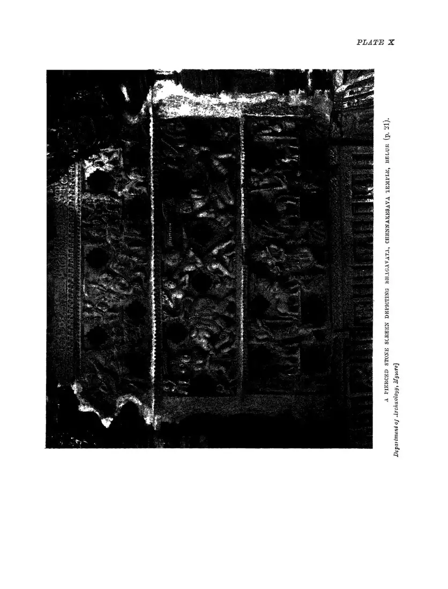
- A PIERCED STONE SCREEN DEPICTING BHIGAVATA, OHENNAKESAVA TEMILE, BELUIR (p. 21)
Cited in the text: p. 21 ↩
In the centre of the bottom panel is Krishna as Vēnugōpāla standing cross-legged, playing on his flute. Cobras and heids of cow listen to him intently, while the cowherds and cowherdesses are either sleeping or listening. Three leopards also listen patronising the cattle.
In the middle panel are three scenes commencing from the right with Srī Krishna fighting Kamsa's elephant (Kuvalayāpīda) In the middle, Krishna has thrown the wrestler (Chānūra) who attacked him.
In the top panel Krishna is holding Kamsa by the ankle and throwing him down, while Lakshmī (?) is seated in right field and the gods are bringing offerings to Krishna.
On the top is Lakshmînārāyana seated in sukhāsana (padma, chakra, gada and śankha) with Gandharvas bringing fruits and flowers
SCREEN XV
This is fully ornamented with creeper and flower designs and in the top panel is Sāradā seated in the centre with rosary, goad, pāša and pustaka and attendants on each side
Smaller Bracket images
Top Eaves; some pillars in the navaranga; the Ratı and Manmatha ceiling
The original temple of Vishnuvaidhana did not have the larger bracket images. They were inserted at a later time probably by his immediate successors, but the original brackets are still in position and can be seen clearly in two corners, where the larger images were not inserted. The smaller figures are formed by a group with a dancer, drummer or other person in centre supported by a rearing lion on śarabha or a falling elephant on each side. These were no doubt too small and were not impressive. They were therefore naturally superseded by the larger bracket images ( See Plate XI, 1 and 2)
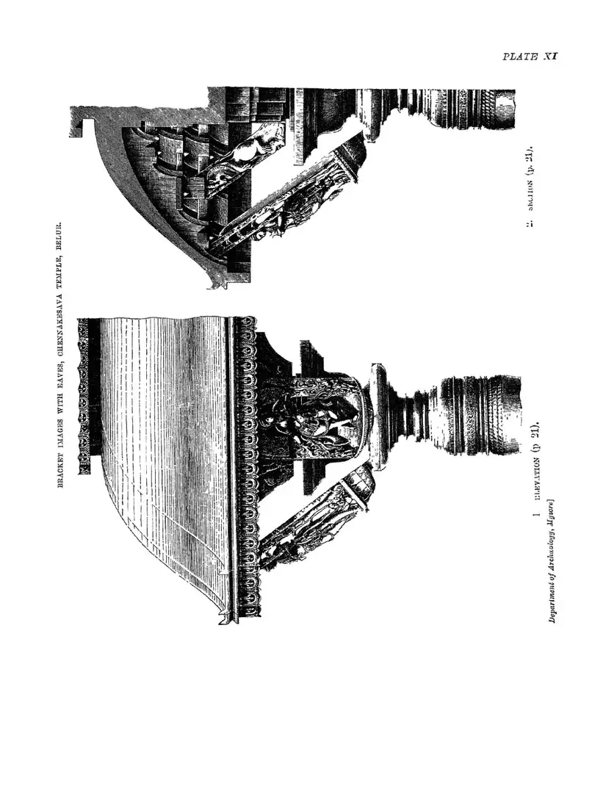
- ELEVATION (p. 21)
- SECTION (p. 21)
Cited in the text: p. 21 ↩
TOP EAVES
Around the whole roof of Navaranga are a line of stone eaves very carefully placed and fixed on walls. Their edge is ornamented with a freize of beaded pendants while on the inner face there is an attempt to imitate wood work. From out of the stone itself are cut out curved rafters and cross pieces and there is a show of joining these with revetting nails whose heads are also carved in stone. There is a freize of creeper scroll work running along the inside of the eaves.
SOME PILLARS IN THE NAVARANGA
(Plates XII, XIII and XIV)
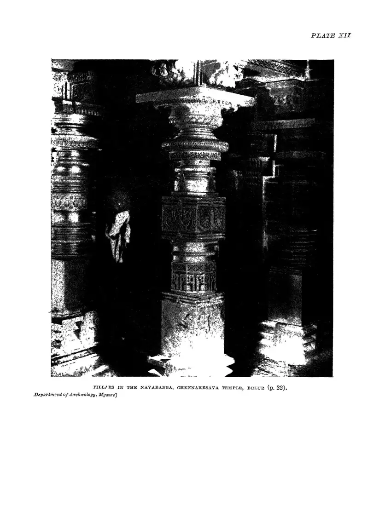
- PILLARS IN THE NAVARANGA, CHENNAKESAVA TEMPLE, BELUR (p. 22)
Cited in the text: p. 22 ↩
The main hall or the navaranga of the Kēśava temple, Bēlūr, consists of a series of pillars with varying designs and exquisite workmanship. Barring the four central pillars all others are so different in design from one another that this temple stands unmatched by any of its kind both in their variety of designs and the general excellence and intricacy of workmanship. Those that have been chosen for illustration here represent a few of this imposing assemblage of pillars in the navaranga.
THE RATI AND MANMATHA CEILING
(Plate XV)
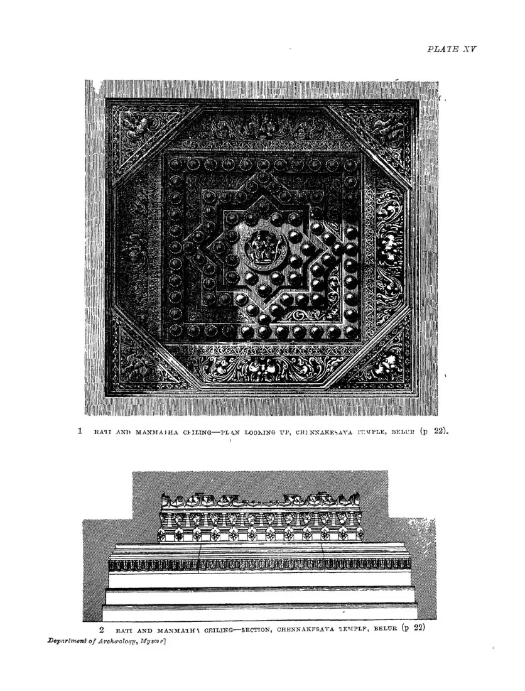
- 1 RATI AND MANMAIHA CEILING—PLAN LOOKING UP, CHINNAKESAVA TEMPLE, BELUR (p 22) 2 RATI AND MANMAIHA CEILING—SECTION, CHENNAKFSAVA TEMPLE, BELUR (p 22) Department of Archaeology, Mysore
Cited in the text: p. 22 ↩
The ceiling chosen for illustration is a remarkable specimen of simple and elegant workmanship. It is a flat square ceiling with corner slabs each of which has been subjected to carving. The motifs of the carvings are lion's faces or simhalalātas with creepers symmetrically running out of the mouth of the animals. Resting on these corner slabs are horizontal slabs which are likewise carved with the simhalalāta motifs. In the square thus formed inside runs all along a band decorated with overhanging pendants carved like the buds of lotuses. Within this frame work is inset an eight-pointed band which is similarly interspersed with overhanging pendant ornamentation. This motif is again repeated on a eight-pointed star-shaped panel from the centre of which bulges out, in bold relief, a figure composition depicting Manmatha and Rati in the seated posture.
The Kappechennigarāya temple
The Ceilings —The ceilings of this temple are remarkably well carved, the nine squares of the navaranga each having a beautiful scene.
The South Cell. —The doorway leading to the south cell (Plate XVI) offers some structural problems. On each side of it there is no dvārapāla and we are not sure whether the finely carved dvārapālas in the small Narasimha shrine in the compound originally belonged to this doorway. There is, however, great contrast between the plamish jambs and the finely carved intel. This latter which was serving originally much longer and broader than it now is, had been cut in the right, left and top and fitted into the space between the pillars. It was certainly a lintel meant for a much larger doorway. The group contains Ugranarasimha slaying Hiranyakaśipu in the centre with Garuđa to his right and Prahlāda to his left. Around him is a tōraṇa of peculiar shape with Gandharvas and ten avatārs in the convolutions. Outside it is a makara tōraṇa. Near the top are seen the remains of a row of dikpālakas cut off while at each end is a dvārapāla standing. The piece is finely executed and is possibly a rejected alternative to the one on the top of the east doorway of the main temple. In the cell to which this doorway leads, there is now only an image of Vēnugōpāla of a much later date, possibly of the late Vijayanagar times. The original image is missing, the three small cells inside the walls are also empty showing that there was originally some other image where Vēnugōpāla now stands Sukhanāsi Doorway. —The sukhanāsi doorway on the west, though small, is a well executed piece (Plate XVII). It consists as usual two jambs, each with a finely carved dvārapāla and the lintel piece which has a pierced ventilator, below the cornice. There is a well carved group above it.
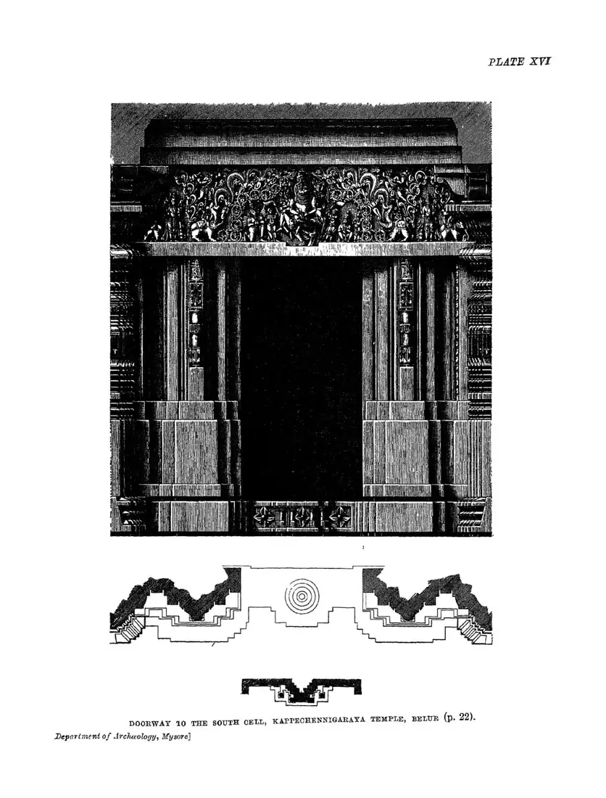
- 1 DOORWAY 10 THE SOUTH CELL, KAPPECHENNIGARAYA TEMPLE, BELUR (p. 22)
Cited in the text: p. 22 ↩
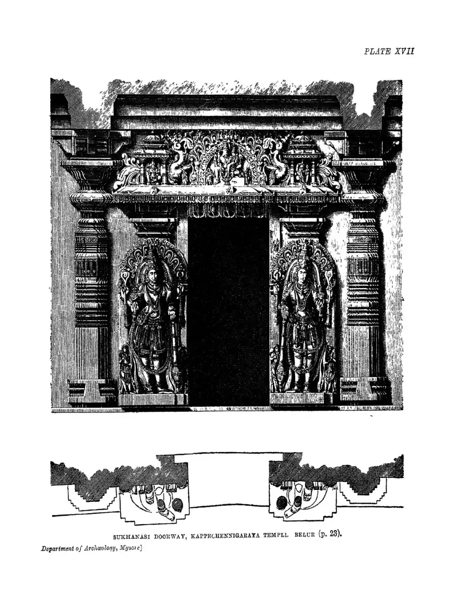
- SUKHANASI DOORWAY, KAPPECHENNIGARAYA TEMPLL BELUR (p. 23)
Cited in the text: p. 23 ↩
In the centre of the group is Lakshmīnārāyaṇa seated (padma, chakra, gada and śankha) under a combined latā and makara tōraṇa with dikpālas near the top edge. At each end of the group is a seated image of Śāradā under a canopy holding rosary, goad, pāśa and phala in her four hands.
Kitchen Block. —Directly to the east of the dipastambha is a long low building now serving as kitchen and store-room. It is almost entirely of soap-stone having been built by Ballālā II. There is nothing remarkable about its architecture, the only noteworthy features being the two ceilings just to the west of its two doorways (Plate XVIII, 1 and 2). The well by its side dates also from the time of Ballālā.
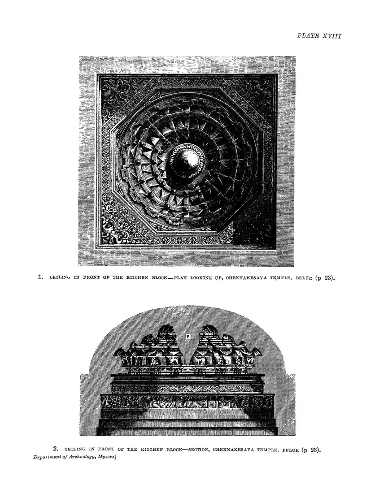
- CEILING IN FRONT OF THE KICHEN BLOCK—PLAN LOOKING UP, CHENNAKESAVA TEMPLE, BELUR (p 23)
- CEILING IN FRONT OF THE KICHEN BLOCK—SECTION, CHENNAKESAVA TEMPLE, BELUR (p 23) Department of Archaeology, Mysore]
Cited in the text: p. 23 ↩
Vāsudēva Pond. —In the north-east corner of the temple enclosure, Ballāla II got constructed a deep pond known as Vāsudēva tīrtha. It has 64 steps all around, the lower ones being granite and upper ones of soap-stone. A small pavilion, well ornamented, leads to the steps (Plate XIX) and inside its north wall is an inscription of Ballālā recording the construction of the pond. Two fine niched towers have been erected to the north-west and south-west of the pond and these niched towers which are now empty closely resemble those which support the doorways of the main temple.
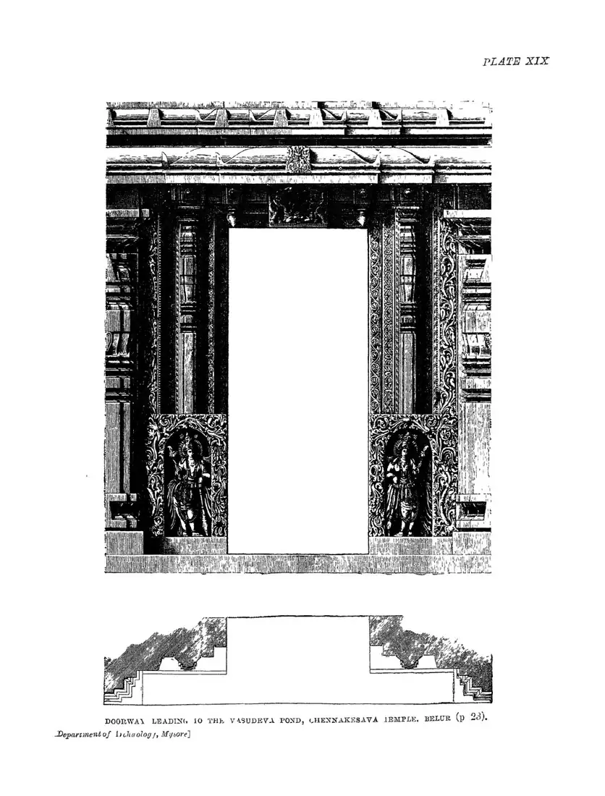
- DOORWAY LEADING TO THE VASUDEVA POND, CHENNAKESAVA IBEMPLE, BELUR (p 23) Department of Ichaeology, Mysore]
Cited in the text: p. 23 ↩
Part IV: Manuscript
History of Midigêsi chiefs
Description of the Document; A resume of the facts given in the Document
1 DESCRIPTION OF THE DOCUMENT.
The rāyal ēkhā (chronicle) of the chiefs of Mīdīgēśi consists of 11 sheets of old paper (of which the seventh is missing) written on both sides. It seems to have been composed a hundred years ago by a son (name unknown) of Dodda-Kannē gauda and brother of Channabasappa-gauda, the last chief who ruled at Mīdīgēśi for some time. It was apparently presented as a kayfyat (statement) with an application for reinstatement to the Madras Government and later, to Krishnarāja Wadiyar III of Mysore. Another copy of the above which seems to have been prepared more recently is in the form of a book and seems to be complete. Both the documents were in possession of Mr Nāgēśa Rao, Shanbhog of Mīdīgēśi.
2. A RESUME OF THE FACTS GIVEN IN THE DOCUMENT.
While Vira-Tirumala-rāya (with titles specified) was ruling at Vijayanagar, seven brothers (Virappagauda, Kālannagauda, Channappagauda, Kālachikkappagauḍa, Rāmappagauda, Sangappagauda and Hirichikkappagauda) who lived at Sonnalāpura in the north as the servants of Siddharamēśvarasvāmi, king of the place, were one day summoned by the king to his presence and presented with a sword called Nāgaramuri and the king foretold that they would become great rulers and-live prosperously and directed them to go to the southern country, with seven carts of treasure and serve under the king of Vijayanagar. He further foretold that they would meet on their way with one Nonabāsura who was once a Śaiva saint but was then a rākshasa owing to a curse, and kill the rākshasa and thereby enable him to go to Kailāsa. The brothers started accordingly towards the south, met Nonabāsura on the way, slew him and went to Vijayanagar, taking with them on their way one Harinarasaiya who became their friend. The king of Vijayanagar, who was pleased with the handsome appearance of the brothers, kept them in his court assigning to them various appointments. Soon Vijayanagar was besieged by Mallakhāna, a general of the Delhi Pādshā (emperor) and the brothers defeated him with his army and slew him. Pleased with their valour, the king presented them with various articles of jewellery and honours (a weapon called Vankini, yellow flag, white umbrella, nābhighantā, tiger's skin, mukkanājya, udāsāpavuḍā, naupattu, and ghadiāra) and gave them a small territory in the south. The brothers, now left for the south with their treasure and flags.
On the way, they found a large treasure by the direction of the god Nonabēsvara and built a temple for the god (in the year Krōdhi, śaka 1052, on Monday 10th day of the bright fortnight of Kārtika), cleared the jungle around and with the help of the king, built a town called Nonabasāgara which they fortafied. They left Hainarasaiya at Tungōtī as the shānubhōg and proceeding further south, built the town of Kōra where they set up the goddess Mahālakshmī in the year Nala, śaka 1064, on Friday 7th day of the bright fortnight of Vaiśākha, whom they worshipped as then family goddess as directed in a dream. Here they met two saints Siddalingēsvara svāmī and Bālēsvarasvāmī, who acted as then advisers for a long time. The brothers now separated and each built a new town for himself where he settled, Kālannagauda at Kōra (which had already been built), Channappagauda at Tereyū, Kālachikkappagauda at Gubbi-Hosahalli, Rāmappagauda at Ennegere, Sangappagauda at Chavalūr and Hrichikkappagauda at Chēlūr-Bidare. The eldest brother Vīnegauda died and his son Doddēgauda moved further with his treasure and clearing the jungle built a town called Mummadipattana where he set up the god Nonabēsvara (The other brothers Channappagauda, Rāmappagauda and Hrichikkappagauda had also built temples for the same god in their new settlements). After his death, his son, Mummadi-Chikkappagauda succeeded him. Once, while he was wandering in the forest, he found the hares chase the hounds at a spot and selected it for building a temple for the goddess Bijamahādēvi. He also built a fort and a town there which he called Bijavara and granted several endowments to Brahmins, Jangamas and artisans. A new temple for Vīrabhadra was also built by him at the same place. He further cleared the jungle to the west of Bijavara and built the town of Siddāpur where he set up five gods, Āñjanēya, Mahābhairava, Vrishabhēsvaia, Vīrabhadra, and Vighnēsvara. To the north of Siddāpur he built a fortress on a hill and set up the god Vīrabhadra there and to the south of Siddāpur he also built a fort and a temple of Gōpālakrishna, called the hill Madhugiri, and repaired the temple of Haibarēsvara. A large town was built on the hill called Madhugiri where he lived happily. But he was not destined to die peacefully. The chief of Koratagere, Ranabhairēgauda, besieged Madhugiri, and when Chikkagauda refused to go to battle, as the time was reported to be inauspicious for him, sent him glass bangles, saffron, etc., as a mark of contempt for his weakness. This incited the wrath of the chief of Maddagiri (Chikkagauda) who went to battle and was murdered treacherously by his enemy who also carried away various insignia of the chief. But Chikkappagauda's brother Sangappagauda soon drove away the enemy and the body of the slain chief was interred with appropriate honours and his son Mummadi Channappagauda succeeded him. This chief built the fort and town Channarāyanadurga and set up the enem the god Channarāyasvāmī. He also made several gifts of land to Brahmins, Jangamas, etc. Meanwhile, the sons of Sangappagauda (Tōtadappagauda, Śākappagauda,
4
Sappēgauda, Vīrappagauda, and Kālannagauda) went to the north to found separate states and the sons of Channappagauda (Rāmappagauda, Annaryagauda and Tammappagauda) went to the east with a similar object
After the death of Channappagauda, his son Kālā-Chikkappagauda succeeded him. At this time, urz , 1557 of saka (Yuva), Narasimhaīāya was ruling at Vijayanagar and one Nāgareddi who came from the eastern country with his wife Midigēśi settled to the north of Madhuguri and discovered a large treasure in the neighbourhood, by the direction of the god Venkataramanasvāmi in a dream. He soon built a temple of the god on the hill, fortified the place and called it Midigēśi, according to his wife's request. He also built villages in the neighbourhood, Bēdatū, etc., and also tanks. One of these tanks was at Avaragallu, between Midigēśi and Madhuguri and while it was under construction, the chief of Madhuguri met him casually and as Nāgareddi used bad language towards him and was also illtreating his own subjects and plundering the king's territory, he reported the matter to the king (of Vijayanagar) and with his permission seized Midigēśi and occupied it. The place was then given to him as a reward and large sums of money were expended by him in improving the town and the worship of the local deities. He (Kālā-Chikkappagauda) also cleared the jungle to the north of Midigēśi and built the villages Gundumale, Gurubetta, Iddaguri, Melavāyī and Jakkēnahalli and fortified them. In his time Śiranēgauda patel of Midigēśi built the temple of Mallēśvara, richly endowed it, and rewarded the baid Bhatiāju-Narasarāju for his ability to compose verses, by ordering that all members of 48 gōtras should give him one hana and one seer of rice during the marriage ceremonies in their families. Meanwhile war broke out between Rangapparāja, chief of Sira, and one Puvvala-Kenga. The infant son of the Śira chief was entrusted to the care of Maddaguri chief and soon Puvvala-Kenga killed Rangapparāja and caused a search for the infant pince to be made. The Maddaguri chief met Puvvala-Kenga and the latter used insolent language towards the former with the result that he was killed in battle and the Maddaguri chief ruled Sira also on behalf of the infant king Kastūri-Rāyapparāja. This act was approved of by the Vijayanagar king. The last act of Kālā-Chikkappagauda was to build a fortress to the west of Tungōtī and name it Boļibetta.
Huē-Virappagauda next succeeded to the rulership of Maddaguri and his ally was Kastūri-Rāyapparāja of Śira. Once the king of Vijayanagar listening to the false complaints of his enemies, summoned him to his presence and when he disobeyed the summons, besieged Maddaguri. But the chief got the king secretly conveyed to his tent at night while he was asleep and when he woke up, explained the motive of his action. The king was pleased with his valour and devotion and forgave him. Meanwhile Kastūri-Rāyapparāja died and was succeeded by Sarja-bhūpāla. Hirē-Virappagauda ruled in conjunction with the Sira chief over the whole of Sira. (a 60,000 country), Maddagırı, Mıdıgēśı and Channaiāyadurga (95,000 country) After the death of Hirē.Vñappagauda, his son Sangappagauda succeeded him He was a very liberal chief and died during the rule of Krishnaiāya at Vijayanagar (whose accession to the throne took place in śaka 1624 Chitiābhānu). Sangappagauda was succeeded by Tōtada-Rāya who protected the west coast merchants against the oppression of Būdī-Basappanāyaka of Rānībidalū. All other rulers to whom the merchants had applied for help (in releasing them and their goods) failed to do anything and the merchants out of gratitude gave the title of Mahānāduprabhu to the chief of Maddagırı and also ordained that a tax should be paid by them all perpetually to the chief. After the death of Tōtada-Rāya, his son Śākappagauda succeeded him and he ruled in alliance with Rangappa-rāja, son of Sarja-bhūpāla over the whole of Maddagırı and Sira territories. At this time, Aliya-Rāmaiāya ascended the throne of Vijayanagar in the year Saumya (śaka 1651)
After the death of Śākappagauda, his son Mummadī-Sappegauda became the chief of Maddagırı. At this time an army belonging to Indurar-Gōrpade invaded Maddagırı and the chief applied to Vijayanagar for help. In accordance with his request an army was sent from Vijayanagar which soon drove away the enemy and restored the lost territory to Śākappagauda. The son and successor of Śākappagauda was Doddakannaiya. In his time Rangappa-rājā of Sira died and left two children behind him—Krishtaparāja and Venkataśāmirāja. As the princes were young the Maddagırı chief ruled over Sira also and brought them up. But he was attacked by Indūrāv-Ghōrpade who came with a very large army and occupied Sira. Doddakannaiya was helpless to recover it. Meanwhile the princes who seemed to be very smart, fled to the hills, where they grew up and plundered the king's territories. The Maddagırı chief felt very angry with them, but could not openly show his disfavour. Soon Ranabhairegauda of Koratagere attacked Maddagırı in the year Śrimukha (śaka 1675) and the princes were summoned and sent with an army against the invader. They killed him and were returning with plunder to Maddagırı, when the elder, Krishṭaparāja, was murdered at the instigation of Doddakannaiya. The younger brother fled to the Mysore rāja for protection. He was liked by this king and was once sent against Nārana-Sānī, ruler of Chīlyōlu, who had attacked the dominions of the Mysore king. He scored a success over her and in acknowledgment of his valour she sent him some jewels and a sadi with three seragus as presents. This excited the suspicion of the Mysore army and he had to flee for protection to the Gauda of Hunjanālu who applied to Doddakannaiya and his mother and step-mother, Guruvamma and Sōmājamma, for help. By the intercession of the above ladies, Doddakannaiya rescued Venkataśāmarāja and drove away the Mysore army by the expedient of tying large numbers of torches to the horns of bullocks and moving hem in the direction of the enemy so as to create the impression that a vast army was marching against them But Venkataśāmurāja once again took to plunder and this time he was saved from the wrath of the Maddaguri chief by the intercession of the ladies mentioned above and was even granted, in the form of a gift, a 12,000 country, part of Maddaguri territory by Doddakannaiya with the approval of the Vijayanagar king Śirangarāya, whose accession to the throne took place in saka 1681 (Pramāthi) This grant was made in the year Vikrama (saka 1687) on the 10th day of the bight half of Phālguna at the temple of Gōpālakīshna on Maddaguri hill in the presence of the Vijayanagar king, Doddakannaiya, Śākappagauda, Piadhān Chikkarasaiya, Dalavāyī Channaiya, Ūligada Ranganāyaka, Hallikāra Timmanāyaka, Bēdara Vōbalanāyaka, Sādara Kempanāyaka, various gaudas, Settis, etc.
Doddakannaiya soon died and was succeeded by his son Mummadi Chikkappagauda In his time Dēvamahārāya and Vijaya-gōpālarāya ruled at Vijayanagar for short periods and departed to the other world Śirangarāya succeeded them and ruled at Ghanaguri. At the same time Mummadi Chikkappagauda died and was succeeded by his son Rāmappagauda. But his younger son Timmappagauda intrigued with the Mysore king and soon the Mysore tioops besieged Madhuguri and Channarāyadroog. At the same time Śirangarāya died at Vijayanagar and the Maddaguri chief was powerless to oppose the Mysore army and was carried away with his brother and their families as prisoners to Śirangapattana, where both the brothers died After some time Rāmappagauda's son Mummadi Hire-Vīrappagauda escaped from Śirangapattana, fled to Mīdīgēśi which he occupied and ruled At his death one Mallarājaiya-urs who was at Mīdīgēśi reported the helpless condition of his family to the Mysore king who soon seized it by treachery and gave Tereyūr hobli for the maintenance of the family of the deceased chief. Some years after, the son of Tōtada-rāyagauda, named Mummadi Doddakannappagauda, grew of age and Hyder sent for him and granted his lands back on condition that he would remain a faithful dependent of Hyder and supply him with tioops Gradually the chief recovered part of his ancestral territories and invaded the rest But before he completed the task he died and his brother and successor Chennabasappa besieged the Mīdīgēśi fort at the instance of Wallis Mendres (?) in the year Viñōdhikrit (saka 1713) during the month of Śrāvana and ruled the surrounding country But in the month of Phālguna, during the same year peace was concluded by Tippu with the English and the Mahrattas and Chennabasappagauda left his territory and after sojourning at various places, descended the Eastern Ghaut and met Colonel Reet [Read] at Krishnaguri to whom he explained his whole history Read told him that the British army would soon march to Bangalore and directed the chief to collect his dependants and seize his former territories and send supplies to the English army Accordingly the chief started for his lost territories, halted at Mogul-Venkatagırı on the way where he received a letter from Read directing him to meet the General commanding the English army at Krishnagırı instead of at Amālagada (as directed in his previous despatch) and promising to send him help after the interview with the General Soon Chennabasappa went to Krishnagırı where Read told him that the General had to go away in a hurry to capture Srīrangapatna, that an istihārnāmā would issue duly, that in the meanwhile the chief should occupy and rule over Maddagırı, Midigēsı and Channarāyadroog, that he should drive away Tippu's followers who might attack him and send supplies to the English army and also news about the movements of Tippu's followers. In accordance with these instructions Chennabasappa went to Maddagırı, occupied the lands below and lived at Bēduttūr. There he received a sannad in which after stating the causes that led to the war between the English and Tippu, the General explained that he was marching with his army on the borders of the chief's territories and promised that he would treat the chief with kindness. It further contained the statement that Read had been appointed as the Chief Officer of the territories conquered by the English from Tippu and directed the chief to occupy the former lands and send supplies and news about the movements of the enemy to the English. Accordingly, Chennabasappa sent supplies to the English army and laid siege to the forts in Maddagırı, Midigēsı, etc. But he was suddenly directed by Read (through his Vakıls ) to go to Bangalore as the whole of the country was given away by the English and formed the Mysore State. Chennabasappa went to Bangalore and was asked by Read to send his Vakıls to Madras where he promised to intercede on his behalf and get him a sannad . The Vakıls Tippaiya and Şivarāmaiya were despatched to Madras where they waited or some time, but on Read's departure to England they returned to Bangalore. Chennabasappa lived for some time in British territory and died in the year Āngirasa (śaka 1734). The son of his elder brother Doddakannappa after sojourning at various places in British India finally settled at Sambhōnahallı in Bıjavar hobli of Maddagırı taluk and prays that as he is a loyal well-wisher of both the British and the Mysore Māhāraja he might be given back his lands. This is his harfyat and Rāyarēkha .
On the back of the last page is stated that two sannads were produced with the document, viz , Read's letter of 29th January 1799 directing him to go to Krishnagırı and the sannad sent by General Harris on 6th March 1799. Below this statement is given what appears to be a copy of an inscription. It is dated as 10th day of Āśviyuja in the year Vikālı (śaka 1521) and states that two brothers Siddavīregauda and Siddabasavēgauda migrated with their family, cattle and two potfuls of money to the north of the Penukonda hill and erecting a cattle shed lived there by tending the cattle. The brothers waited in the śaka year 1524 (Şubhakrit) on
Information collected from the Epigraphia Carnatica and other books regarding the event mentioned in the Râyarêkha
No heading in the body: this section starts at its printed page (30).
Rāmarāya of Vijayanagar, son-in-law of Śrīrangarāya, at Ghanaguri Aftei some time, the elder brother died, and the younger, Siddabasavēgauda, went to Midigēsi on Tuesday the 10th day of the dark fortnight of the month of Pushya in the year Dhātu (śaka 1558) and performed pūja to the village debty and expended the sum of twenty varahas on the same. The details of the expenditure are given and at the end of the page it is stated that lands were given rent-free to them below Annayianakatte, Sanyāsi-katte, Jāli-katte, and similar gifts were also made for the temples and the use of Dēvasthānada (temple Manager) Puttappa
Information collected from the Epigraphia Carnatica and other books regarding the events mentioned in the Rayarekha
1. Maddaguri 21 states that in the year 1593 A.D, during the reign of Vira Venkatapatirāya at Vijayanagar, the mahānādupiabhu, Bijavar Chikkappagauda's son (whose name is lost) built five temples of Vighnēśvara, etc. The description corresponds to that of the temples built by Mummadī-Chikkappagauda of Rāyarēkha (No 3) who must have lived in 1593 A D
2. Tumkur 66 states that during the rule of Vira-Rāmakrishnadēva at Penukonda, Mummadī-Chikkappagauda ruled at Bijavara and that he gave the village of Karikare in Kōra māgani as dowry to his daughter. The date of the inscription as given in the English translation is 1598 A.D. (Vilambi), but at this time the Vijayanagar king was Venkatapatirāya I. This confirms Maddaguri 21 in the statement that Mummadī-Chikkappagauda was ruling at about 1593 A D
3. Sira 64 mentions the Harati chief Kastūri-Rangapparāja, son of Rangapparāja and grandson of Sarja-Krishnapparāja. The date of the inscription, as given in the text, is 1621 A.D (Dumati). According to Sira 54, the Harati chief in 1626 A.D was Mummadī-Rangapparāja, son of Immadī-Rangappanāyaka and grandson of Rangappanāyaka. As Mummadī-Rangappanāyaka appcaus, according to the inscriptions, to have been the last powerful chief of his dynasty, the contemporary of Kāla-Chikkappagauda (No 5) Kastūri-Rangapparāja might refer to Mummadī-Ranganāyaka who ruled in 1626 A.D. Thus the date of Kāla-Chikkappagauda might be put down as about 1626 A D
4. Maddaguri 30, 31 and 32 mention the name of Ranabhairēgauda as the chief of Koratagere. The dates of 31 and 32 do not seem to be clear. Maddaguri 30 refers to Mummadī-Ranabhairēgauda who ruled in 1648 A.D. It is hard to say which of the Ranabhairegaudas are referred to in Rāyarēkha as fighting with Mummadī-Chikkagauda and Mummadī-Dodđakannaiyagauda.
5. Rice's Gazetteer (Vol. I) gives some details in connection with the history of the Tumkur District. P 177 states that Rāmagauda and Timmagauda, chiefs of Maddaguri, were taken as prisoners about 1678 A.D. by Dalavāyi Dēvarāja of Mysore and sent to Seringapatam. This evidently refers to Rāmappagauda (No. 13) who, according to Rāyarēkha, was carried as a prisoner along with his brother. According to Mr. Rice, the brothers were allowed to return and occupy Midigēśi, but the Rāyarēkha says that they died in captivity and the son of the elder brother escaped later and established himself at Midigēśi. Further in P. 162 of the same Gazetteer (Vol. II) we find that eight years after Rāmagauda recovered Maddagiri it was captured by Komāraya, general of the Mysore Rāja. According to the Rāyarēkha this event took place at the death of Tōtada-Rāyagauda. P 177 of the Gazetteer states that the English gave help to the dispossessed chief of Maddagiri and that at the conclusion of peace they were expelled by Tippu Sultan. This apparently refers to the siege of Midigēśi by Chennabasappagauda under the protection of the English and his loss of the place according to the Rāyarēkha.
We know from history that General Harris commanded the English army in the last Mysore War and that at its conclusion Maddagiri became part of Mysore subject to the Mahārāja of Mysore. Wilks' History of Mysoor mentions Lieutenant Colonel Read as the General "who exercised the civil and military authority in the province of Bārāmahal and was destined to collect, arrange and eventually escort further supplies of provisions to the army in advance." Apparently this is the Colonel "Reet" of the Rāyarēkha.
The Indūīāv-Ghōrpade referred to in the Rāyarēkha appears to refer to the family of Murāraji Hindu Rao Ghōipade, the same as the celebrated Morari Rao of Gutti, who was defeated by Haidar in 1775 A.D. But the date given in the Rāvarēkha does not correspond to this.
The dates given in the earlier part of the Rāyarēkha and the chronological order of the descent of the Vijayanagar kings given therein do not correspond with those given in history. Nor are the titles given at the beginning of the Rāyarēkha in connection with Vīra-Thrumalarāya of Vijayanagar, such as Srīmadīndirākatāksha vīkshana-sudhāsārābhishēchana-samprāpta-sāmrājya-vaibhava, Rāmanātha-pañchapirangi-birudānkita, etc., found in any inscription of the Vijayanagar kings.
All plates (17)
Click a plate to go to its place in the text; each plate there has links to the previous and next plate and back to this list.